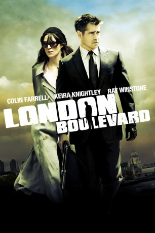

#9463 London Boulevard
 
 IMDB-Wertung: 6.2 / 10
IMDB-Wertung: 6.2 / 10  Metascore: 0
Metascore: 0 
London Boulevard basiert auf dem gleichnamigen Roman von Ken Bruen. Darin versucht der frisch aus dem Gefängnis entlassene Mitchell sein Leben endlich in geregelte und vor allem legale Bahnen zu führen. Er bekommt die Möglichkeit für die zurückgezogen lebende Star-Schauspielerin Charlotte als Bodyguard zu arbeiten. Während sich Mitchell und Charlotte langsam näher kommen, holt seine dunkle Vergangenheit den Ex-Häftling wieder ein. Sein früherer Boss und Gangster-Oberhaupt möchte seinen Soldaten wieder zu seinen kriminellen Ursprüngen zurückführen und hat noch die eine oder andere Schuld einzukassieren.
Jahr: 2010
Dauer: 103 Minuten
FSK: 16
Land: USA Studio: IFC FilmsTonspuren: DTS - ,
Untertitel:
Auflösung: 720p (1280x688) Größe: 4055 MB
Genre: Drama, Krimi
Regisseur: William Monahan
Drehbuch: William Monahan, Ken Bruen
Soundtrack: Serge Pizzorno
Darsteller:
 Colin Farrell als Mitchel
Colin Farrell als Mitchel Keira Knightley als Charlotte
Keira Knightley als Charlotte David Thewlis als Jordan
David Thewlis als Jordan Anna Friel als Briony
Anna Friel als Briony Ben Chaplin als Billy Norton
Ben Chaplin als Billy Norton Ray Winstone als Gant
Ray Winstone als Gant Eddie Marsan als DI Bailey
Eddie Marsan als DI Bailey Sanjeev Bhaskar als Dr. Raju
Sanjeev Bhaskar als Dr. Raju Stephen Graham als Danny
Stephen Graham als Danny Ophelia Lovibond als Penny
Ophelia Lovibond als Penny Jamie Campbell Bower als Whiteboy
Jamie Campbell Bower als Whiteboy Velibor Topic als Storbor
Velibor Topic als Storbor Lee Boardman als Lee
Lee Boardman als Lee Alan Williams als Joe
Alan Williams als Joe Tony Way als Lone Paparazzo
Tony Way als Lone Paparazzo Tim Plester als Paparazzo One
Tim Plester als Paparazzo One Nick Bartlett als Beaumont
Nick Bartlett als Beaumont Matt King als Fletcher
Matt King als Fletcher Jamie Blackley als The Footballer
Jamie Blackley als The Footballer Sarah Niles als Hospital Matron
Sarah Niles als Hospital Matron Jonny Coyne als Heavy One
Jonny Coyne als Heavy One- Elly Fairman als Gant's Wife
- Hainsley Lloyd Bennett als Unfortunate Student
- Michelle Asante als Woman in Brixton Flat
- Julian Bastida als Spanish Man (uncredited)
- David Dawson als Big Issue Seller (uncredited)
- Katrina Durden als Girl in pub (uncredited)
 Andrew Havill als Unlikely Vagrant (uncredited)
Andrew Havill als Unlikely Vagrant (uncredited) Duane Henry als Nation of Islam Guy (uncredited)
Duane Henry als Nation of Islam Guy (uncredited)- Oleg Hill als Russian Gangster (uncredited)
 Philip Howard als Gangster Cameo (uncredited)
Philip Howard als Gangster Cameo (uncredited)- David Lyddon als Customer (uncredited)
- Peter Nikkos als Senior TMZ Reporter (uncredited)
- Eric Richard als Villanous Pensioner in Cafe (uncredited)
- Daniel Ryan als Bank Manager (uncredited)
 Kerry Shale als Lawyer (uncredited)
Kerry Shale als Lawyer (uncredited)- Ben Shockley als Detective (uncredited)
- Jonathan Cullen als Anthony Trent
- Robert Willox als Ravaged Guard
- Jake Abraham als Paparazzo Two
- Damir Koluder als Storbor's Friend
- Gregory Foreman als Kid with Footballer
- Bob Mercer als Heavy Two
- Oliver Wood als Bottom Feeder One
- Jonny Leigh-Wright als Bottom Feeder Two
- Julian Littman als Alfons
- Zehra Sameena als Indian Woman at Ashmole Estate
- Giles Terera als Waiter
- Gerald Home als Undertaker
- Augustina Amoa als Passerby (uncredited)
Datei: X:\2010(G-M)\London Boulevard (2010, FSK16, 1280x688).mkv seit 03.09.2018
Festplatte: HD 2010(G-Z)-2011(A-F)
 Es gibt insgesamt 85 Filme in der Gruppe '2010(G-M)'
Es gibt insgesamt 85 Filme in der Gruppe '2010(G-M)'